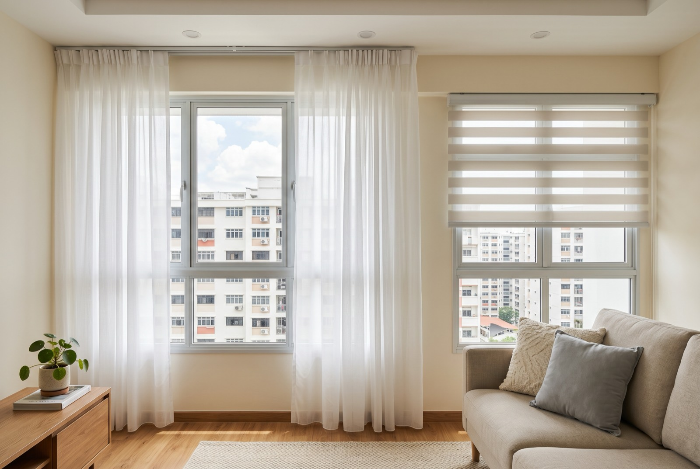

Curtain rail & blinds installation in Singapore: cost & what to know

Moving in and the windows are still bare? Here's the short answer: curtain rail installation in Singapore typically costs about S$30–80 per window, and blinds around S$25–60 per panel, with the price driven mostly by the wall you're drilling into — solid concrete lintel or hollow partition. Whether you want to install blinds in an HDB flat or run a full-height curtain track in a condo, this guide covers the curtain track cost, which system suits which room, the right anchors for each wall, and why so many DIY rails end up sagging.
Rail, track or blinds — which one do you actually need?
People use "curtain rail" loosely, but the three systems behave differently on the wall and on the quote:
- Curtain rod (rail). A round pole on wall brackets, for eyelet or ring-top curtains. The most decorative option and the easiest to DIY badly — the brackets carry all the load at two or three points, so anchor choice matters most here.
- Curtain track. A slim channel mounted to the wall or ceiling with gliders inside. Smoother to draw, nearly invisible behind the fabric, and the only sensible choice for bay and L-shaped windows because tracks can be bent around corners. Ceiling-mounted tracks also make low HDB ceilings feel taller.
- Blinds. Roller blinds for a clean minimal look, venetian for adjustable slats in kitchens and studies, and Korean (zebra) blinds — alternating sheer and solid bands — as the popular middle ground that does day-and-night duty in one panel. Blinds beat fabric in kitchens, bathrooms and service yards, where curtains trap grease and moisture.
Many flats end up with a mix: tracks in the bedrooms and living room, blinds in the kitchen and yard. That's also the cheapest way to buy installation, as you'll see below.
What curtain rail and blinds installation costs in 2026
Installation is priced per window or per panel, and almost every handyman applies a minimum trip charge. Indicative Singapore ranges:
| Job | Typical price (SGD) | Notes |
|---|---|---|
| Single curtain rail or track install | $30 – $80 per window | Depends on span, wall type, bracket count |
| Blinds install (roller / venetian / Korean) | $25 – $60 per panel | Inside-mount recesses take longer to level |
| Double (day-night) rail or track | Top of range + a little | One drilling session, double brackets |
| Whole-flat install | Quote as a bundle | Spreads the trip charge across every window |
Two ways to pay less without cutting corners: do every window in one visit instead of room by room, and bundle the install with other handyman jobs — TV mounting, shelf hanging, furniture assembly — so the trip charge is shared across the lot. Prices above are indicative, not a quotation; confirm a fixed price before drilling starts.
The part that decides everything: which wall you're drilling
The strip of wall directly above a window is where rails and blinds live, and in most Singapore homes it's one of two very different materials.
Concrete lintel (most HDB windows)
Above the typical HDB window sits a reinforced concrete lintel. It holds screws beautifully — once you get a hole into it. That takes a hammer drill, a proper masonry bit and standard wall plugs sized to the screw. An ordinary cordless drill will skate on the surface or burn out the bit, which is where most DIY attempts stall.
Hollow and partition walls
Tap the wall: a dull knock means solid, a drum-like echo means hollow. Newer BTOs and many condos use drywall or lightweight partition panels around windows and between rooms. Ordinary plastic plugs have nothing to grip in a cavity and pull straight out under load. Hollow walls need cavity anchors — toggle or expanding types — rated for the weight of the rail plus the fabric.
Matching bit, plug and screw to the actual wall is the whole game. It's the difference between a rail that outlasts the curtains and one that lets go the first time someone yanks the fabric.
Why curtains sag or fall down (and how to prevent it)
When a rail fails, it's almost never the rail. It's one of these:
- Wrong plugs for the wall. Plastic plugs in a hollow wall are the classic failure — fine for a week, then out they come with a chunk of plaster.
- Too few brackets. Spans over about 1.8 m need a centre bracket. Without it the rail bows, gliders jam at the dip, and the constant tugging works the end screws loose.
- Overloaded hardware. Blackout curtains are heavy — a double layer of them, more so. Slim decorative rods rated for sheers won't carry them for long.
- Drilling too close to the window frame. The edge of the lintel can crumble; fixings need enough meat around them to bite.
A proper installer checks the wall, counts the brackets for the span, and asks what fabric is going up before drilling — not after the first sag.
Day-night curtains: worth planning before you drill
The most-requested setup in Singapore homes is the day-night combination: a sheer curtain for daytime privacy and light, with a blackout layer behind it for sleeping. It runs on a double rod or double track, which needs deeper brackets and a little more clearance from the wall — easy to allow for on day one, annoying to retrofit after a single rail is already up. If you think you'll ever want the second layer, install the double hardware now; the added cost is small because it's the same drilling session.
Korean blinds achieve a similar day-night effect in one panel, which is why they've become the default for kitchens, studies and rental units.
Measuring: the five-minute step that saves a re-order
- Width: measure the window, then add 15–30 cm on each side so open curtains stack beside the glass instead of blocking it.
- Height: mount the rail 10–15 cm above the frame — or go ceiling height for a taller-looking room. For blinds, decide inside-mount (within the recess, needs exact measurements) or outside-mount (overlapping the frame, more forgiving).
- Drop: floor-length curtains should end about 1 cm above the floor; sill-length blinds about 1 cm above the sill.
- Obstructions: check for aircon trunking, window grilles and casement handles that swing into the curtain's path.
- Measure every window separately — even in the same room, HDB and condo windows are rarely identical.
HDB vs condo windows: what changes
HDB flats mostly have casement or sliding windows in a concrete opening with a solid lintel above — straightforward drilling once you have the right tools. Condos add complications: full-height glass panels with no wall above (calling for ceiling-mounted tracks), bay windows with ledges that need bent tracks or multiple blind panels, and curtain walls where drilling is restricted by the MCST — check your house rules before committing to a wall-mounted system. For HDB flats, no permit is needed for curtain or blinds installation; it's ordinary home improvement, not renovation works. Just keep drilling within the permitted noise hours set out by HDB.
If the same visit involves drilling for other fixtures, the wall logic is identical — our guide to mounting a TV on an HDB wall covers the same lintel-vs-hollow question for much heavier loads.
Frequently asked questions
How much does curtain rail installation cost in Singapore?
About S$30–80 per window for a rail or track, and S$25–60 per panel for blinds, depending on wall type and span. A minimum trip charge usually applies, so a whole-flat install in one visit works out cheapest per window.
Can I drill a curtain rail into an HDB wall myself?
You can, but the concrete lintel above most HDB windows needs a hammer drill and masonry bit, and hollow walls need cavity anchors. The wrong drill or plug is why most DIY rails come loose.
Should I choose a rod, a track, or blinds?
Rods for a decorative look, tracks for smooth gliding and bay or L-shaped windows, blinds for kitchens, bathrooms and service yards where fabric doesn't cope well.
Why do my curtains keep sagging or falling?
Wrong plugs for the wall, too few brackets for the span, or blackout fabric overloading light-duty hardware. Re-drill with the correct anchors and add a centre bracket past about 1.8 m.
What is a day-night curtain setup?
A double rail or track with a sheer layer in front and a blackout layer behind. Install the double hardware from day one — it's the same drilling session and only slightly more.
Do I need an HDB permit for curtain or blinds installation?
No — it's normal home improvement, not renovation works. Just keep drilling within HDB's permitted noise hours.
Getting it done by RK E&C
RK E&C is a Singapore-registered renovation and handyman company (UEN 202442767D) that installs curtain rails, tracks and blinds in HDB flats and condos island-wide. We bring the hammer drill and the right anchors for your wall type, install day-night setups and bent tracks for bay windows, and quote a fixed price per window before we start. Most customers bundle the install with other handyman jobs — furniture assembly, TV mounting, shelf hanging — to spread the trip charge across one visit.
Send photos of your windows and your postal code and we'll quote you — usually the same day.
Windows still bare?
Send us photos of your windows and your postal code. Fixed price per window, right anchors for your wall, island-wide.
Prices are indicative of the Singapore market in 2026 and not a quotation. Confirm a fixed price with your provider before work begins.